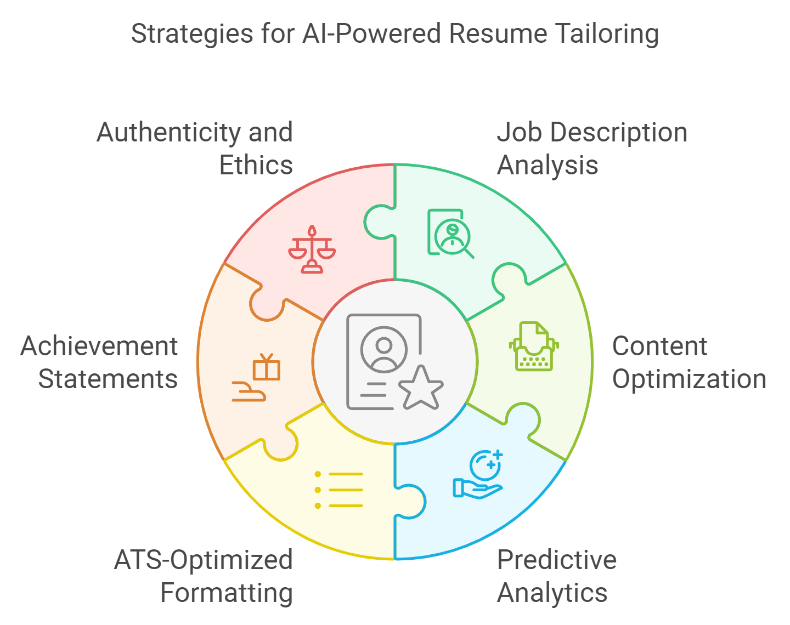
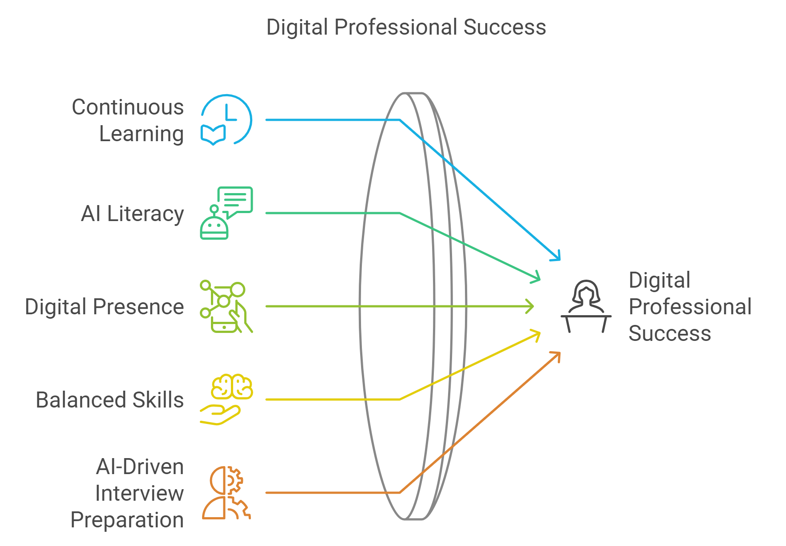
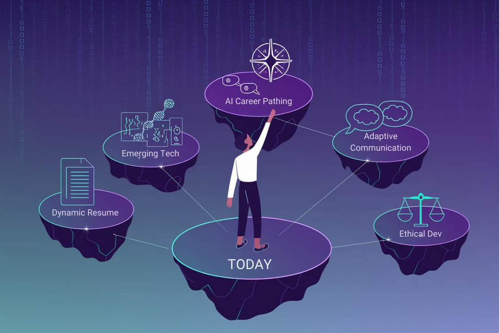
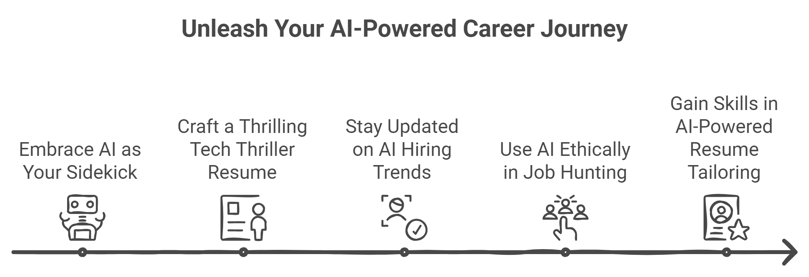

IX. Conclusion: Mastering AI-Powered Resume Tailoring for STEM Professionals
Welcome, triumphant tech titans, to the grand finale of our AI-powered resume revolution. You've journeyed through the silicon valleys and machine learning mountaintops of resume crafting. Now, it's time to download all that knowledge into your neural networks and prepare for the ultimate boss battle: landing your dream job in the world of STEM. Hold on tight, for we're about to compress more career wisdom than you can shake a USB stick at.

A. Recap of Key Strategies for AI-Powered Resume Tailoring: Your Career Cheat Codes
1. Leveraging AI for Job Description Analysis: Become the Sherlock Holmes of Job Postings
- Use NLP tools to extract key requirements faster than you can say "elementary, my dear Watson"
- Align your resume content with the specific language of each role.
STEM Application: Decode the Matrix
Identify both explicit technical requirements and implicit skills. Did they ask for Python skills, or did they really ask for a snake charmer who can make code dance?
2. Optimizing Content with AI Writing Assistants: Your Personal Shakespeare-bot
- Employ AI tools to refine language. It's like auto-tune for your professional achievements.
- Balance technical accuracy with a compelling narrative. Be the "Bill Nye meets Ernest Hemingway" of resumes.
STEM Application: Translate Geek to Chic
Turn "Optimized algorithm efficiency" into "Slashed processing time by 50%, saving the company millions and preventing the space-time continuum from collapsing".
3. Utilizing Predictive Analytics for Skill Emphasis: Your Career Crystal Ball
- Use AI-driven market analysis to spot the next big thing in your field. Be the trend-setter, not the trend-follower.
- Highlight forward-looking capabilities. Show them you're not just ready for the future - you're building it.
STEM Application: Flex Your Future Muscles
Showcase proficiency in cutting-edge tech. If you can code in a language that hasn't been invented yet, even better!
4. Implementing ATS-Optimized Formatting: Charm the Bots, Wow the Humans
- Use AI-powered ATS simulators to ensure your resume is machine-readable. Make those algorithms swoon.
- Balance ATS optimization with human-friendly design, like creating a Turing test for your resume.
STEM Application: Speak Robot and Human
Ensure your groundbreaking research on "quantum entanglement in caffeinated software developers" doesn't get lost in translation.
5. Crafting AI-Enhanced Achievement Statements: Your Humble-Brag Bot
- Use AI tools to generate impactful descriptions.
- Focus on quantifiable outcomes and business impact. Numbers are the universal language of awesomeness.
STEM Application: Quantify Your Quantum Leaps
Translate your technical wizardry into business magic. "Developed an AI that predicts coffee shortages, preventing 100% of office meltdowns."
6. Maintaining Authenticity and Ethical Considerations: Keep It Real (and Legal)
- Use AI as a tool to enhance, not fabricate. You're optimizing your resume, not writing science fiction.
- Balance optimization with truthful representation. Be the Batman of resumes: enhanced, but still fundamentally you.
STEM Application: The Ethical Engineer
Accurately represent your skills. If you say you can build an Iron Man suit, you better have the arc reactor to prove it.
B. Empowering STEM Professionals in the AI-Driven Job Market: Level Up Your Career Game

1. Embracing Continuous Learning: Become the Eternal Student of the Digital Age
Action Item: Quarterly Skill Quests
Set up a quarterly skill review and learning plan based on AI-driven market insights.
2. Developing AI Literacy: Speak Fluent Robot
Action Item: Monthly AI Digest
Allocate time each month to read about AI advancements in HR tech. Consider it your "Keeping Up with the Kardashians," but for career-savvy tech pros.
3. Cultivating a Strong Digital Presence: Become the Influencer of Your Field
Action Item: Your Digital Doppelgänger
Set up Google Alerts for your name and regularly audit your online presence. Ensure your digital self is as impressive as your IRL self. (You're on your own with embarrassing photos, though.)
4. Balancing Technical and Soft Skills: Be the Swiss Army Knife of Talent
Action Item: The Soft Skills Diary
Create a "soft skills" section in your master resume, updating it with each project. Did you calm down a server that was having an existential crisis? That's crisis management!
5. Preparing for AI-Driven Interview Processes: Charm Both Bits and Beings
Action Item: AI Interview Bootcamp
Conduct mock interviews using AI interview preparation tools.
C. Future-Proofing Your Resume and Career Strategy: Become the Doc Brown of Your Career

1. Adopting a Dynamic Resume Approach: Your Resume, Now in 4D
Action Item: The Living Resume
Set up a system for regularly updating your master resume. Think of it as a Tamagotchi for nurturing your career.
2. Anticipating Emerging Technologies: Channel Your Inner Nostradamus
Action Item: The Future Portfolio
Experiment with creating a digital portfolio that showcases your projects in an interactive format. If you can make it holographic, even better.
3. Developing Adaptive Communication Skills: Become the Polyglot of Professional Speak
Action Item: The Elevator Pitch Trilogy
Create three versions of your elevator pitch: technical (for the CTO), semi-technical (for the CEO who once took a coding class), and non-technical (for your grandma who thinks you "work with computers").
4. Leveraging AI for Career Pathing: Your Personal Career GPS
Action Item: Annual Career Cartography
Conduct a yearly career path analysis using AI tools, like a yearly check-up, but instead of a doctor poking you, it's an AI poking your career prospects.
5. Contributing to Ethical AI Development: Be the Jiminy Cricket of AI
Action Item: The Ethics Engineer
Engage in discussions or contribute to open-source projects related to ethical AI in recruitment. Help ensure the robots of tomorrow don't judge candidates based on their favorite Star Trek captain.
D. Final Thoughts: The Symbiosis of Human Expertise and AI in STEM Careers
And there you have it. You've reached the end of our AI-powered resume odyssey. You're now armed with more high-tech career strategies than Tony Stark has Iron Man suits. But remember, with great power comes great responsibility (and hopefully a great job offer).
"In the grand chess game of careers, AI is your queen - powerful and versatile. But you, dear STEM professional, are the grandmaster making the moves." - Someone who offers very relevant quotes
As you venture forth into the AI-enhanced job market, keep these pearls of wisdom close to your silicon-infused heart:
- AI is your sidekick, not your replacement. You're Iron Man, AI is your J.A.R.V.I.S.
- Your resume should read like a thrilling tech thriller, not a bot-generated manual. Keep it authentically you, just with better SEO.
- Stay as up-to-date with AI hiring trends as you do with your smartphone's OS. Your career will thank you.
- Your ethical use of AI in job hunting reflects your professional integrity. Don't be the villain in the AI recruitment story.
- The skills you gain in AI-powered resume tailoring might just be your ticket to becoming the next big AI innovator. Full circle, anyone?
By mastering these AI-powered techniques, you're not just optimizing your job search - you're participating in a tech revolution. Your experience with these tools can spark innovation in your field, position you as a forward-thinking leader, and maybe even inspire you to create the next generation of AI recruitment tools (just remember us little people when you do).

Key Takeaways: Mastering AI-Powered Resume Tailoring
- Leverage AI tools to optimize your resume for both ATS systems and human recruiters.
- Tailor your resume based on industry trends and evolving technologies using AI-driven insights.
- Maintain authenticity and accuracy while enhancing your resume with AI tools for keyword optimization, formatting, and language refinement.
Master Your AI-Powered Resume Today
You've completed the journey through AI-powered resume tailoring. Now it's time to apply your knowledge! Use advanced AI tools like Watson Discovery or VMock to perfect your resume and align it with the job market. Visit our website for additional resources, services, and AI-based career consultations.